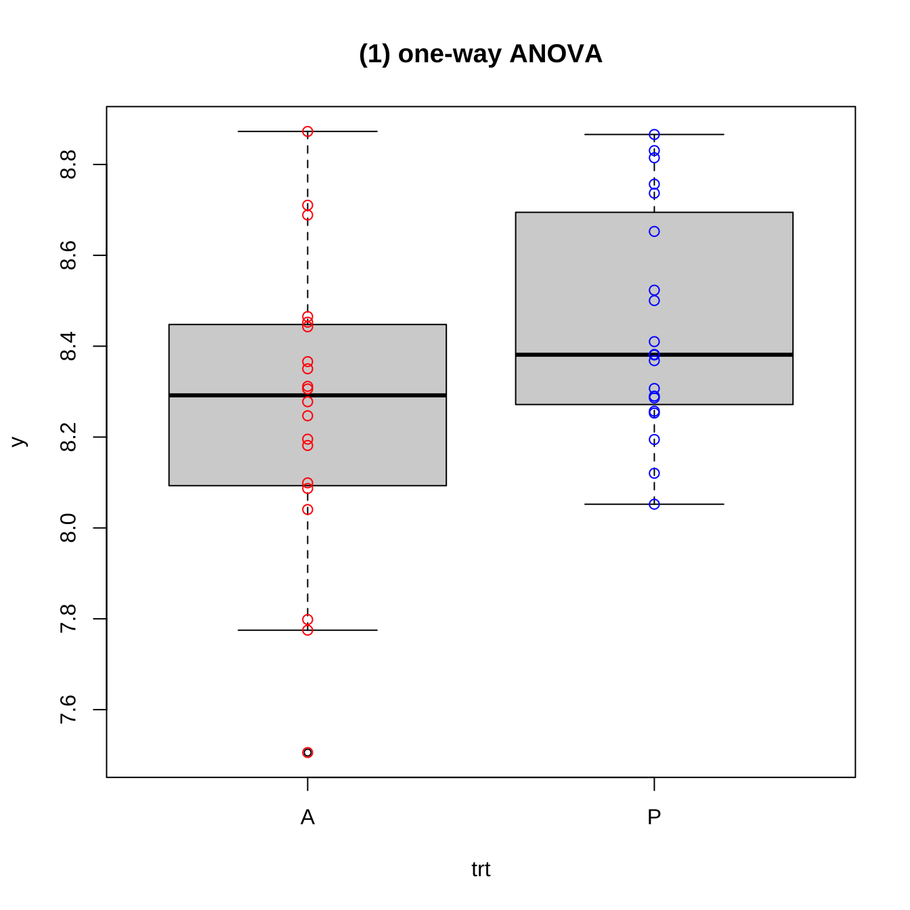
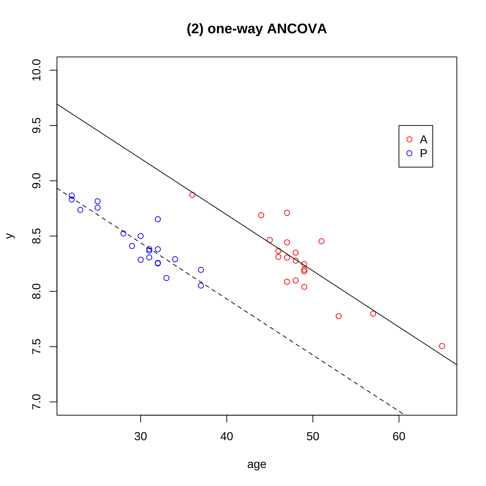

제 7 장 일웝배치와 공분산분석
7.1 예제 7.1 - 일원배치
이제 교재 예제 7.1 (271 페이지)에서 관고비 자료 adsale에서 판매액을 예측하는 회귀식을 고려해 보자.
먼저 adsale 데이터프레임에서 두 변수 광고비 ad 와 매체 media 변수의 차이점을 알아보자. 먼저 광고비 ad는 수치 변수(numeric variable)로서 함수 class()를 이용하면 정수(integer) 형태인 것을 알 수 있다. 수치변수는 정수, 실수, 복소수 등을 의미한다.
반면 매체 media 는 범주형 변수로서 함수 class()를 이용하면 범주형(factor) 형태인 것을 알 수 있다. levels는 범주형 변수의 항목을 나타내는 것으로서 범주형 변수 media는 두 개의 항목 방송과 신문으로 이루어 졌음을 알 수 있다.
head(adsale)## sale ad media
## 1 39 4 방송
## 2 42 6 신문
## 3 45 6 방송
## 4 47 8 신문
## 5 50 8 방송
## 6 50 9 신문adsale$ad## [1] 4 6 6 8 8 9 9 10 12 12adsale$media## [1] 방송 신문 방송 신문 방송 신문 방송 방송 신문 방송
## Levels: 방송 신문class(adsale$ad)## [1] "integer"class(adsale$media)## [1] "factor"그룹별 기초통계량을 계산해보자.
adsalesum <- adsale %>% group_by(media) %>% summarise(mean=mean(ad), median= median(ad), sd=sd(ad), min=min(ad), max=max(ad))
adsalesum## # A tibble: 2 x 6
## media mean median sd min max
## <fct> <dbl> <dbl> <dbl> <int> <int>
## 1 방송 8.17 8.5 2.86 4 12
## 2 신문 8.75 8.5 2.5 6 12함수 lm()으로 선형모형을 적합하는 경우 set-to-zero 조건을 적용하며 자료에 나타난 처리의 수준들 중 순위가 가장 낮은 수준의 효과를 0으로 지정한다 set-to-zero 조건을 강제로 지정하려면 다음과 같은 명령문을 먼저 실행한다.
options(contrasts=c("contr.treatment", "contr.poly"))이제 광고비 ad 와 매체 media 를 포함한 회귀식을 적합시켜 보자. R의 lm 함수는
범주형변수를 자동적으로 가변수로 바꾸어 준다. 회귀식에 사용된 디자인행렬을 보면 media에 해당하는 열이 0 과 1로 이루어진 벡터로 바뀌었음을 알 수 있다.
fit1 <- lm(sale~ ad + media, data=adsale)
summary(fit1)##
## Call:
## lm(formula = sale ~ ad + media, data = adsale)
##
## Residuals:
## Min 1Q Median 3Q Max
## -0.47902 -0.24720 0.02727 0.22832 0.39091
##
## Coefficients:
## Estimate Std. Error t value Pr(>|t|)
## (Intercept) 29.21888 0.38588 75.72 1.84e-11 ***
## ad 2.56503 0.04408 58.19 1.16e-10 ***
## media신문 -2.66294 0.22114 -12.04 6.21e-06 ***
## ---
## Signif. codes: 0 '***' 0.001 '**' 0.01 '*' 0.05 '.' 0.1 ' ' 1
##
## Residual standard error: 0.3403 on 7 degrees of freedom
## Multiple R-squared: 0.998, Adjusted R-squared: 0.9974
## F-statistic: 1707 on 2 and 7 DF, p-value: 3.875e-10model.matrix(fit1)## (Intercept) ad media신문
## 1 1 4 0
## 2 1 6 1
## 3 1 6 0
## 4 1 8 1
## 5 1 8 0
## 6 1 9 1
## 7 1 9 0
## 8 1 10 0
## 9 1 12 1
## 10 1 12 0
## attr(,"assign")
## [1] 0 1 2
## attr(,"contrasts")
## attr(,"contrasts")$media
## [1] "contr.treatment"data.frame(media=adsale$media, z=model.matrix(fit1)[,3])## media z
## 1 방송 0
## 2 신문 1
## 3 방송 0
## 4 신문 1
## 5 방송 0
## 6 신문 1
## 7 방송 0
## 8 방송 0
## 9 신문 1
## 10 방송 07.2 예제 7.2 - 교호작용
fit2 <- lm(sale ~ ad + media + ad:media, data=adsale)
summary(fit2)##
## Call:
## lm(formula = sale ~ ad + media + ad:media, data = adsale)
##
## Residuals:
## Min 1Q Median 3Q Max
## -0.3674 -0.1400 -0.1043 0.2194 0.4490
##
## Coefficients:
## Estimate Std. Error t value Pr(>|t|)
## (Intercept) 29.00000 0.46388 62.516 1.13e-09 ***
## ad 2.59184 0.05411 47.901 5.55e-09 ***
## media신문 -1.93333 0.85628 -2.258 0.0647 .
## ad:media신문 -0.08517 0.09645 -0.883 0.4112
## ---
## Signif. codes: 0 '***' 0.001 '**' 0.01 '*' 0.05 '.' 0.1 ' ' 1
##
## Residual standard error: 0.3458 on 6 degrees of freedom
## Multiple R-squared: 0.9982, Adjusted R-squared: 0.9973
## F-statistic: 1102 on 3 and 6 DF, p-value: 1.298e-08anova(fit2)## Analysis of Variance Table
##
## Response: sale
## Df Sum Sq Mean Sq F value Pr(>F)
## ad 1 378.50 378.50 3166.1379 2.116e-09 ***
## media 1 16.79 16.79 140.4378 2.183e-05 ***
## ad:media 1 0.09 0.09 0.7797 0.4112
## Residuals 6 0.72 0.12
## ---
## Signif. codes: 0 '***' 0.001 '**' 0.01 '*' 0.05 '.' 0.1 ' ' 1model.matrix(fit2)## (Intercept) ad media신문 ad:media신문
## 1 1 4 0 0
## 2 1 6 1 6
## 3 1 6 0 0
## 4 1 8 1 8
## 5 1 8 0 0
## 6 1 9 1 9
## 7 1 9 0 0
## 8 1 10 0 0
## 9 1 12 1 12
## 10 1 12 0 0
## attr(,"assign")
## [1] 0 1 2 3
## attr(,"contrasts")
## attr(,"contrasts")$media
## [1] "contr.treatment"7.3 예제 7.3 - 일원배치 2
english1## score grade
## 1 81 1
## 2 75 1
## 3 69 1
## 4 90 1
## 5 72 1
## 6 83 1
## 7 65 2
## 8 80 2
## 9 73 2
## 10 79 2
## 11 81 2
## 12 69 2
## 13 72 3
## 14 67 3
## 15 62 3
## 16 76 3
## 17 80 3
## 18 89 4
## 19 94 4
## 20 79 4
## 21 88 4class(english1$grade)## [1] "integer"위의 결과로 보면 변수 grade는 수치형 변수이다. 따라서 이를 범주형 변수로 바꾸어 주어야 한다. 위의 명령문은 함수 factor()를 사용하여 수치 변수인 grade를 항목의 순서가 4,1,2,3 (levels=c(4,1:3)) 인 범주형 변수로 바꾸어 주는 것이다.
english1$grade <- factor(english1$grade, levels=c(4, 1:3), labels = c("4학년", "1학년", "2학년", "3학년"))
english1$grade## [1] 1학년 1학년 1학년 1학년 1학년 1학년 2학년 2학년 2학년 2학년 2학년 2학년 3학년 3학년 3학년 3학년 3학년 4학년 4학년 4학년 4학년
## Levels: 4학년 1학년 2학년 3학년그룹별 기초통계량을 계산해보자.
english1sum <-english1 %>% group_by(grade) %>% summarise(mean=mean(score), median= median(score), sd=sd(score), min=min(score), max=max(score))
english1sum ## # A tibble: 4 x 6
## grade mean median sd min max
## <fct> <dbl> <dbl> <dbl> <int> <int>
## 1 4학년 87.5 88.5 6.24 79 94
## 2 1학년 78.3 78 7.79 69 90
## 3 2학년 74.5 76 6.57 65 81
## 4 3학년 71.4 72 7.13 62 80이제 일원배치모형을 적합시키고 ANOVA F-검정을 수행해 보자.
fit3 <- lm(score ~ grade, english1)
summary(fit3)##
## Call:
## lm(formula = score ~ grade, data = english1)
##
## Residuals:
## Min 1Q Median 3Q Max
## -9.500 -5.500 0.600 4.667 11.667
##
## Coefficients:
## Estimate Std. Error t value Pr(>|t|)
## (Intercept) 87.500 3.513 24.910 8.06e-15 ***
## grade1학년 -9.167 4.535 -2.021 0.05927 .
## grade2학년 -13.000 4.535 -2.867 0.01069 *
## grade3학년 -16.100 4.713 -3.416 0.00329 **
## ---
## Signif. codes: 0 '***' 0.001 '**' 0.01 '*' 0.05 '.' 0.1 ' ' 1
##
## Residual standard error: 7.025 on 17 degrees of freedom
## Multiple R-squared: 0.4341, Adjusted R-squared: 0.3342
## F-statistic: 4.347 on 3 and 17 DF, p-value: 0.01905anova(fit3)## Analysis of Variance Table
##
## Response: score
## Df Sum Sq Mean Sq F value Pr(>F)
## grade 3 643.63 214.544 4.347 0.01905 *
## Residuals 17 839.03 49.355
## ---
## Signif. codes: 0 '***' 0.001 '**' 0.01 '*' 0.05 '.' 0.1 ' ' 1적합한 모형을 이용하여 최소제곱 평균을 구해보자.
emmeans(fit3, "grade")## grade emmean SE df lower.CL upper.CL
## 4학년 87.5 3.51 17 80.1 94.9
## 1학년 78.3 2.87 17 72.3 84.4
## 2학년 74.5 2.87 17 68.4 80.6
## 3학년 71.4 3.14 17 64.8 78.0
##
## Confidence level used: 0.95다중비교 방법을 적용하지 않고 각 학년별 평균의 차이를 비교하자.
anova.res <- aov(fit3)
test1 <- LSD.test(anova.res, "grade", alpha = 0.05, group = FALSE, console = FALSE, p.adj=c("none") )
test1$comparison## difference pvalue signif. LCL UCL
## 1학년 - 2학년 3.833333 0.3579 -4.724208 12.3908748
## 1학년 - 3학년 6.933333 0.1215 -2.041892 15.9085586
## 1학년 - 4학년 -9.166667 0.0593 . -18.734289 0.4009556
## 2학년 - 3학년 3.100000 0.4761 -5.875225 12.0752252
## 2학년 - 4학년 -13.000000 0.0107 * -22.567622 -3.4323777
## 3학년 - 4학년 -16.100000 0.0033 ** -26.042965 -6.1570353본페로니 수정(Bonferroni correction)을 적용하여 각 학년별 평균의 차이를 비교하자.
test2 <- LSD.test(anova.res, "grade", alpha = 0.05, group = FALSE, console = FALSE, p.adj=c("bonferroni") )
test2$comparison## difference pvalue signif. LCL UCL
## 1학년 - 2학년 3.833333 1.0000 -8.270123 15.9367895
## 1학년 - 3학년 6.933333 0.7292 -5.760879 19.6275452
## 1학년 - 4학년 -9.166667 0.3556 -22.698742 4.3654087
## 2학년 - 3학년 3.100000 1.0000 -9.594212 15.7942119
## 2학년 - 4학년 -13.000000 0.0641 . -26.532075 0.5320754
## 3학년 - 4학년 -16.100000 0.0197 * -30.162945 -2.0370548다중비교 방법 중 가장 많이 이용되는 Tukey’s Honest Significant Difference (HSD) 방법으로 각 학년별 평균의 차이를 비교하자.
test3 <- TukeyHSD(anova.res, conf.level = 0.95, ordered=FALSE)
test3## Tukey multiple comparisons of means
## 95% family-wise confidence level
##
## Fit: aov(formula = fit3)
##
## $grade
## diff lwr upr p adj
## 1학년-4학년 -9.166667 -22.05714 3.7238087 0.2190188
## 2학년-4학년 -13.000000 -25.89048 -0.1095246 0.0476922
## 3학년-4학년 -16.100000 -29.49617 -2.7038250 0.0157259
## 2학년-1학년 -3.833333 -15.36293 7.6962583 0.7813729
## 3학년-1학년 -6.933333 -19.02567 5.1590044 0.3891708
## 3학년-2학년 -3.100000 -15.19234 8.9923378 0.88424297.4 예제 7.4 - 공분산 분석
교육방법 method의 세 가지 방법 A,B,C의 효과를 비교하기 위하여 세 집단에 대하여 방법을 적용하기 전에 영어 시험 prescore 을 보고 각 집단에 대하여 A, B, C 벙법을 적용하여 교육을 실시한 후에 영어 성적 postscore을 측정하였다.
english2## postscore prescore method
## 1 70 56 A
## 2 72 63 A
## 3 80 72 A
## 4 78 75 A
## 5 92 90 A
## 6 86 77 A
## 7 85 80 A
## 8 78 72 A
## 9 87 86 A
## 10 68 67 B
## 11 76 75 B
## 12 80 83 B
## 13 82 80 B
## 14 90 93 B
## 15 65 60 B
## 16 93 95 B
## 17 72 70 B
## 18 85 85 B
## 19 70 62 C
## 20 68 66 C
## 21 82 75 C
## 22 84 82 C
## 23 87 83 C
## 24 85 87 C
## 25 88 90 C
## 26 74 71 C
## 27 81 80 Cenglish2$method## [1] A A A A A A A A A B B B B B B B B B C C C C C C C C C
## Levels: A B Cenglish2$method <- factor(english2$method, levels = c("A", "B", "C"), labels =c("A 방법", "B 방법", "C 방법") )
english2$method## [1] A 방법 A 방법 A 방법 A 방법 A 방법 A 방법 A 방법 A 방법 A 방법 B 방법 B 방법 B 방법 B 방법 B 방법 B 방법 B 방법 B 방법 B 방법 C 방법 C 방법 C 방법 C 방법 C 방법 C 방법 C 방법 C 방법 C 방법
## Levels: A 방법 B 방법 C 방법아래 R 명령문에서 함수 relevel()을 이용하여 교육방법 C를 기준항목으로 하고 공분산분석을 수행해 보자.
english2$method <- relevel(english2$method, ref="C 방법")
english2$method## [1] A 방법 A 방법 A 방법 A 방법 A 방법 A 방법 A 방법 A 방법 A 방법 B 방법 B 방법 B 방법 B 방법 B 방법 B 방법 B 방법 B 방법 B 방법 C 방법 C 방법 C 방법 C 방법 C 방법 C 방법 C 방법 C 방법 C 방법
## Levels: C 방법 A 방법 B 방법english2 %>% ggplot(aes(method, postscore)) + geom_boxplot() + theme_bw()그림 7.1: 교육방법에 따른 영어 성적
이제 3가지 교육 방법에 대한 일원배치 분석을 해보자.
fit40 <- lm(postscore ~ method , data=english2)
summary(fit40)##
## Call:
## lm(formula = postscore ~ method, data = english2)
##
## Residuals:
## Min 1Q Median 3Q Max
## -14.000 -6.444 1.111 5.556 14.000
##
## Coefficients:
## Estimate Std. Error t value Pr(>|t|)
## (Intercept) 79.8889 2.7181 29.392 <2e-16 ***
## methodA 방법 1.0000 3.8439 0.260 0.797
## methodB 방법 -0.8889 3.8439 -0.231 0.819
## ---
## Signif. codes: 0 '***' 0.001 '**' 0.01 '*' 0.05 '.' 0.1 ' ' 1
##
## Residual standard error: 8.154 on 24 degrees of freedom
## Multiple R-squared: 0.009972, Adjusted R-squared: -0.07253
## F-statistic: 0.1209 on 2 and 24 DF, p-value: 0.8867anova(fit40)## Analysis of Variance Table
##
## Response: postscore
## Df Sum Sq Mean Sq F value Pr(>F)
## method 2 16.07 8.037 0.1209 0.8867
## Residuals 24 1595.78 66.491이러한 실험에서 중요한 관심은 세 가지 영어교육 방법의 효과에 차이가 있는 지를 보는 것이지만 학생들의 영어에 대한 선행 능력도 교육의 효과에 영향을 미친다. 이러한 경우
교육 전의 점수 prescore를 공변량(covariate)라고 하며 집단간의 차이를 알아보는 실험에서 반응값에 영향을 미칠 수 있는 여러 가지 공변량을 모형에 같이 포함시키는 방법을 공분산분석(ANCOVA; Analysis of Covariance)라고 한다.
english2 %>% ggplot( aes(prescore, postscore)) + geom_point(aes(colour = method)) + theme_bw()그림 7.2: 교육 전과 후의 영어 성적
fit4 <- lm(postscore ~ method + prescore, data=english2)
summary(fit4)##
## Call:
## lm(formula = postscore ~ method + prescore, data = english2)
##
## Residuals:
## Min 1Q Median 3Q Max
## -3.5044 -1.2316 -0.2874 1.3847 3.8373
##
## Coefficients:
## Estimate Std. Error t value Pr(>|t|)
## (Intercept) 22.67685 3.22300 7.036 3.61e-07 ***
## methodA 방법 3.05503 1.00713 3.033 0.00591 **
## methodB 방법 -1.87530 1.00225 -1.871 0.07411 .
## prescore 0.73981 0.04066 18.195 3.76e-15 ***
## ---
## Signif. codes: 0 '***' 0.001 '**' 0.01 '*' 0.05 '.' 0.1 ' ' 1
##
## Residual standard error: 2.123 on 23 degrees of freedom
## Multiple R-squared: 0.9357, Adjusted R-squared: 0.9273
## F-statistic: 111.5 on 3 and 23 DF, p-value: 7.563e-14anova(fit4)## Analysis of Variance Table
##
## Response: postscore
## Df Sum Sq Mean Sq F value Pr(>F)
## method 2 16.07 8.04 1.7832 0.1906
## prescore 1 1492.12 1492.12 331.0651 3.76e-15 ***
## Residuals 23 103.66 4.51
## ---
## Signif. codes: 0 '***' 0.001 '**' 0.01 '*' 0.05 '.' 0.1 ' ' 17.5 예제: 공분산분석 2
면역세포의 양을 증가시켜주는 새로운 약의 효과를 측정하기 위하여 한 집단에는 새로운 약(집단 A)를 투여하고 다른 집단에는 위약(집단 P)를 투여하여4주가 지난 후 면역세포가 증가한 비율(percentage; \(y\))를 측정하였다. 즉정된 자료는 다음과 같다.
data1## trt y age
## 1 P 8.814752 25
## 2 P 8.052182 37
## 3 P 8.866027 22
## 4 P 8.120308 33
## 5 P 8.368265 31
## 6 P 8.500431 30
## 7 P 8.410057 29
## 8 P 8.286201 30
## 9 P 8.381821 31
## 10 P 8.523312 28
## 11 P 8.290160 34
## 12 P 8.194626 37
## 13 P 8.830524 22
## 14 P 8.306876 31
## 15 P 8.756627 25
## 16 P 8.380687 32
## 17 P 8.252787 32
## 18 P 8.736798 23
## 19 P 8.256965 32
## 20 P 8.652589 32
## 21 A 8.099116 48
## 22 A 7.505564 65
## 23 A 8.872682 36
## 24 A 8.040548 49
## 25 A 8.465196 45
## 26 A 8.350292 48
## 27 A 8.277757 48
## 28 A 8.366004 46
## 29 A 8.195370 49
## 30 A 7.774903 53
## 31 A 8.305913 47
## 32 A 8.442647 47
## 33 A 8.246845 49
## 34 A 8.452886 51
## 35 A 8.710324 47
## 36 A 8.311612 46
## 37 A 7.798335 57
## 38 A 8.688703 44
## 39 A 8.181481 49
## 40 A 8.086845 47이제 두 처리 집단의 반응값을 비교해 보자.
data1 %>% ggplot(aes(trt, y)) + geom_boxplot() + theme_bw()그림 7.3: 처리 집단에 따른 반응값
위의 그림에서 나타난 것과 같이 위약를 투여한 집단 P의 면역세포 증가비율이 새로운 약을 투여한 집단 A보다 평균적으로 크다는 것을 알 수 있다.
따라서 약을 복용하지 않는 것이 면역세포를 증가시키는데 도움이 된다는 비상식적인 결론이 분석에서 얻어진것이다.
일원배치 분산분석 모형에서 두 집단의 평균의 차이가 있는지 대한 가설을 검정할 수 있다.
anova.fit <- lm(y~trt,data=data1)
summary(anova.fit)##
## Call:
## lm(formula = y ~ trt, data = data1)
##
## Residuals:
## Min 1Q Median 3Q Max
## -0.75309 -0.16513 -0.02542 0.19655 0.61403
##
## Coefficients:
## Estimate Std. Error t value Pr(>|t|)
## (Intercept) 8.25865 0.06495 127.149 <2e-16 ***
## trtP 0.19045 0.09186 2.073 0.045 *
## ---
## Signif. codes: 0 '***' 0.001 '**' 0.01 '*' 0.05 '.' 0.1 ' ' 1
##
## Residual standard error: 0.2905 on 38 degrees of freedom
## Multiple R-squared: 0.1016, Adjusted R-squared: 0.07799
## F-statistic: 4.299 on 1 and 38 DF, p-value: 0.04497anova(anova.fit)## Analysis of Variance Table
##
## Response: y
## Df Sum Sq Mean Sq F value Pr(>F)
## trt 1 0.3627 0.36271 4.2987 0.04497 *
## Residuals 38 3.2063 0.08438
## ---
## Signif. codes: 0 '***' 0.001 '**' 0.01 '*' 0.05 '.' 0.1 ' ' 1두 집단을 ANOVA를 이용한 F 검정으로 비교해 보면 p-값이 0.045로서 두 집단간의 유의한 차이가 있음을 알 수 있으며 이 유의한 차이는 위약를 투여한 집단 P의 면역새포 증가 비율 집단 A보다 크다는 것을 의미한다.
그런데 두 집단에 속한 환자들의 연령를 비교해 보면 위약를 투여한 집단 P의 평균 나이가 새로운 약을 투여한 집단 A의 평균 나이보다 20세 정도 적다. 따라서 콜레스테롤이 감소한 결과가 약효의 차이 때문인지 나이의 차이때문인지 확신할 수 없다.
data1 %>% ggplot( aes(age, y)) + geom_point(aes(colour = trt)) + theme_bw()그림 7.4: 나이와 반응변수의 관계
data1sum <-data1 %>% group_by(trt) %>% summarise(mean=mean(age), median= median(age), sd=sd(age), min=min(age), max=max(age))
data1sum ## # A tibble: 2 x 6
## trt mean median sd min max
## <fct> <dbl> <dbl> <dbl> <dbl> <dbl>
## 1 A 48.6 48 5.54 36 65
## 2 P 29.8 31 4.43 22 37따라서 연령을 공변량으로 반영하여 공분산 분석을 적용하기로 하였다.
ancova.fit <- lm(y~trt+age,data=data1)
summary(ancova.fit)##
## Call:
## lm(formula = y ~ trt + age, data = data1)
##
## Residuals:
## Min 1Q Median 3Q Max
## -0.25781 -0.07730 -0.01854 0.06204 0.37297
##
## Coefficients:
## Estimate Std. Error t value Pr(>|t|)
## (Intercept) 10.723681 0.224503 47.766 < 2e-16 ***
## trtP -0.761545 0.096808 -7.867 2.05e-09 ***
## age -0.050773 0.004578 -11.091 2.54e-13 ***
## ---
## Signif. codes: 0 '***' 0.001 '**' 0.01 '*' 0.05 '.' 0.1 ' ' 1
##
## Residual standard error: 0.1416 on 37 degrees of freedom
## Multiple R-squared: 0.7923, Adjusted R-squared: 0.781
## F-statistic: 70.55 on 2 and 37 DF, p-value: 2.367e-13anova(ancova.fit)## Analysis of Variance Table
##
## Response: y
## Df Sum Sq Mean Sq F value Pr(>F)
## trt 1 0.36271 0.36271 18.1 0.000137 ***
## age 1 2.46486 2.46486 123.0 2.535e-13 ***
## Residuals 37 0.74144 0.02004
## ---
## Signif. codes: 0 '***' 0.001 '**' 0.01 '*' 0.05 '.' 0.1 ' ' 1공분산 분석의 결과를 보면 집단 P에 대한 계수가 \(trtP= -0.761545\)로 집단 A보다 평균적으로 \(0.76\) 낮다는 것을 알수 있다.

위의 그림에서 나타난 바와 같이 연령의 효과를 반영하면 집단 A의 회귀식이 집단 P의 회귀식보다 위에 위치함을 알 수 있고 이는 집단 A의 회귀식의 절편이 집단 P의 회귀식의 절편보다 크다는 것을 의미하며 이는 새로운 약을 투여한 집단의 면역세포 증가 비율이 위약 집단보다 크다는 것을 의미한다.
또한 연령에 대한 기울기를 보면 \(-0.050669\)으로서 나이가 많을 수록 면역세포 증가 비율이 작아짐을 알 수 있다.
따라서 나이를 고려하지 않은 일원배치 분산분석에서 두 집단의 차이는 20세라는 평균 나이에 의한 차이 즉, \((20) \times (-0.050669)= -1.01\)과 약의 효과에 의한 차이가 상호작용하여 비상식적인 결과가 나타난 것이다.
한가지 더 주목할 점은 나이를 고려하지 않은 일원배치 분산분석에서 오차항의 분산에 대한 추정량은 \(\hat \sigma^2 = (0.2916)^2 =0.085\)이며 공분산 분석에서는 \(\hat \sigma^2 = (0.1416)^2 =0.020\)으로 줄어 들었다. 이는 공분산 분석이 자료의 변동 중 처리(treament)로 설명할 수 없는 부분을 공변량인 나이를 이용하여 부가적으로 설명해준다 것을 알수 있다.
7.6 연습문제 7.13
fit5 <- lm(postscore ~ method , data=english2)
summary(fit5)##
## Call:
## lm(formula = postscore ~ method, data = english2)
##
## Residuals:
## Min 1Q Median 3Q Max
## -14.000 -6.444 1.111 5.556 14.000
##
## Coefficients:
## Estimate Std. Error t value Pr(>|t|)
## (Intercept) 79.8889 2.7181 29.392 <2e-16 ***
## methodA 방법 1.0000 3.8439 0.260 0.797
## methodB 방법 -0.8889 3.8439 -0.231 0.819
## ---
## Signif. codes: 0 '***' 0.001 '**' 0.01 '*' 0.05 '.' 0.1 ' ' 1
##
## Residual standard error: 8.154 on 24 degrees of freedom
## Multiple R-squared: 0.009972, Adjusted R-squared: -0.07253
## F-statistic: 0.1209 on 2 and 24 DF, p-value: 0.8867anova(fit5)## Analysis of Variance Table
##
## Response: postscore
## Df Sum Sq Mean Sq F value Pr(>F)
## method 2 16.07 8.037 0.1209 0.8867
## Residuals 24 1595.78 66.491fit6 <- lm(postscore ~ method + prescore + method:prescore , data=english2)
summary(fit6)##
## Call:
## lm(formula = postscore ~ method + prescore + method:prescore,
## data = english2)
##
## Residuals:
## Min 1Q Median 3Q Max
## -3.5402 -1.2554 0.0054 1.0200 3.8300
##
## Coefficients:
## Estimate Std. Error t value Pr(>|t|)
## (Intercept) 22.92142 6.07039 3.776 0.00111 **
## methodA 방법 8.92311 8.03989 1.110 0.27961
## methodB 방법 -7.50913 7.87202 -0.954 0.35099
## prescore 0.73665 0.07797 9.447 5.19e-09 ***
## methodA 방법:prescore -0.07883 0.10484 -0.752 0.46048
## methodB 방법:prescore 0.07167 0.10030 0.715 0.48275
## ---
## Signif. codes: 0 '***' 0.001 '**' 0.01 '*' 0.05 '.' 0.1 ' ' 1
##
## Residual standard error: 2.098 on 21 degrees of freedom
## Multiple R-squared: 0.9427, Adjusted R-squared: 0.929
## F-statistic: 69.04 on 5 and 21 DF, p-value: 2.575e-12anova(fit6)## Analysis of Variance Table
##
## Response: postscore
## Df Sum Sq Mean Sq F value Pr(>F)
## method 2 16.07 8.04 1.8258 0.1857
## prescore 1 1492.12 1492.12 338.9743 1.95e-14 ***
## method:prescore 2 11.22 5.61 1.2747 0.3003
## Residuals 21 92.44 4.40
## ---
## Signif. codes: 0 '***' 0.001 '**' 0.01 '*' 0.05 '.' 0.1 ' ' 1